Plot types¶
Overview of many common plotting commands in Matplotlib.
Note that we have stripped all labels, but they are present by default. See the gallery for many more examples and the tutorials page for longer examples.
Basic¶
Basic plot types, usually y versus x.
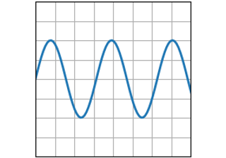
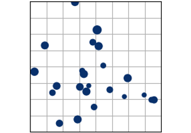
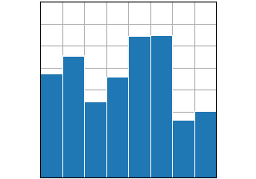
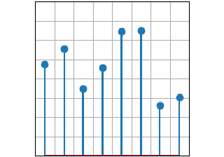
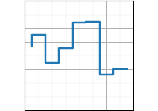
Plots of arrays and fields¶
Plotting for arrays of data Z(x, y) and fields U(x, y), V(x, y).
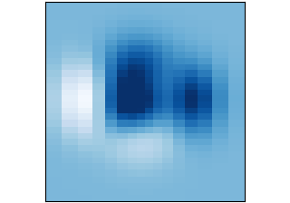
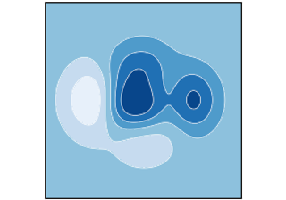
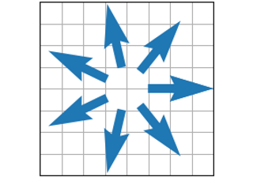
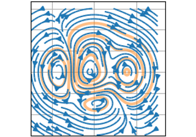
Specialized statistics plots¶
Specialized plots for statistical analysis.
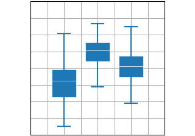
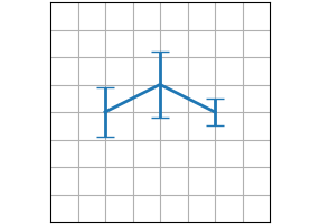
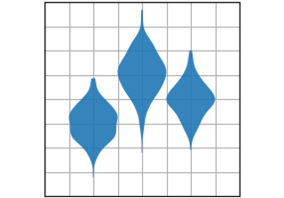
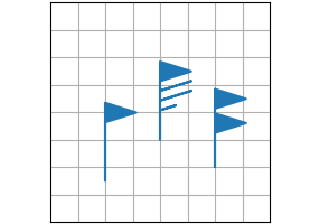
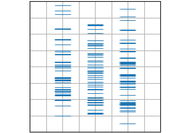
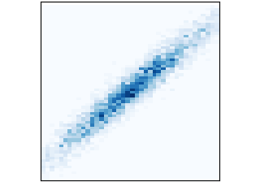
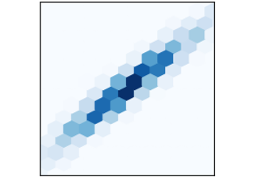
Unstructured coordinates¶
Sometimes we collect data z at coordinates (x,y) and want to visualize
as a contour. Instead of gridding the data and then using
contour, we can use a triangulation algorithm and fill the
triangles.
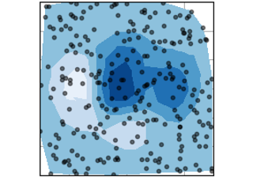
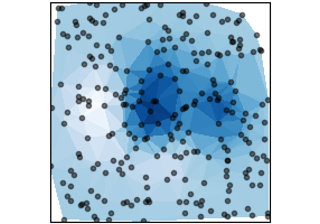
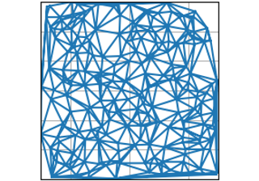
Keywords: matplotlib code example, codex, python plot, pyplot Gallery generated by Sphinx-Gallery